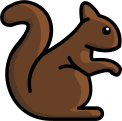
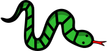

Body
Ben hat einen besonderen Apfelbaum im Garten:
- Landet ein Vogel
 auf dem Baum, wachsen sofort zwei neue Äpfel.
auf dem Baum, wachsen sofort zwei neue Äpfel. - Klettert ein Eichhörnchen  auf den Baum, fällt ein Apfel runter. Wenn kein Apfel am Baum hängt, passiert nichts.
- Besucht eine Schlange  den Baum, verschwinden alle Äpfel sofort.
Heute Morgen hängen 25 Äpfel am Baum. Dann besuchen einige Tiere nacheinander den Baum, zuletzt ein Eichhörnchen. Ben hat ihre Reihenfolge genau aufgeschrieben:

Comments
WGL1: Valentina Dagienė and Bence Gaál, 2023-05-15: TiCT part and related keywords have been added with sources. We also add a new keyword: instantly.
Pre-Workshop Review by Jean-Philippe Pellet: I think it can work as “hard” for 8-10, too. Very nice idea and implementation. Keeping track of state is essential in programming. Having a long list of “commands”, most of which can be ignored by a smart solving process is really good. The math is little, but the CT is highly present, so this is a really good task IMO. As a non-native speaker, I find the “their” possessive for a single person to be rather confusing from a clarity point of view. Explanation is complete and concise. The link to the variable is clear. Between that and the condition, one could mention a program as a list of instructions. To me, the link to program is clearer than the one to the condition. One would need the condition to actually implement a small interpreter for the 3-symbol minilanguage invented here, but it doesn’t seem to be central here. Graphics are nice and UXWing licence seems totally appropriate. [TiCT] Missing.
Author Response:
Pre-Workshop Review by Raluca Constantinescu: Age/difficult level specified and appropriate for the task. Very interesting idea, very attractive. The text is very clear and understandable. Words and expressions are used consistently in the entire task. [EXPL] Available and complete. Very good answer explanation. [TiI] Available and very well and clearly described. All the figures are clear and appealing. They are suitable for the age group.
Author Response:
Pre-Workshop Review by Mārtiņš Opmanis: It seems that task is appropriate also for the second younger (8 - 10 yo.) age group. Easy task with nice catch that you should count apples only after the last appearance of a snake. Tale is a bit artificial (bird’s visit leads to appear apples).
Author Response:
Pre-Workshop Review by Atheer Khabti: Very interesting idea, I really like it. [TEXT] Clear and understandable. [EXPL] Very good. [TiI] Very good. In the body section, the three options that can change the tree can be written in 3 points under each other to be more clear for younger ages.
Author Response:
Pre-Workshop Review by Samuel Rosario: The age and the level are appropriate. It is a good concept to bring early computation and algorithms. The text of the task is well written. The task explanation is complete and direct. The size of the symbols representing the animal should be bigger.
Author Response: